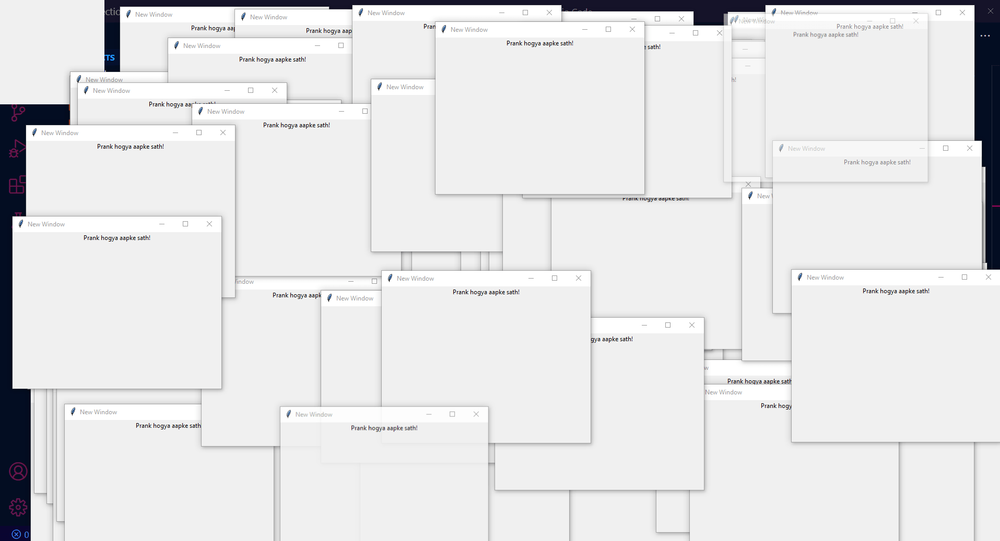

Creating Randomly Positioned Prank Windows using Tkinter
Introduction
Click here to see the short video of this tutorial. In this blog, Learn how to create prank windows using Tkinter in Python. Discover how to create windows that appear randomly on the screen and surprise or amuse users. This tutorial will guide you through the process of using Tkinter to create the main window and subsequent prank windows. The positions of these windows will be randomized on the screen.
Code Explanation
Let's examine the code in detail:
import tkinter as tk
import randomWe begin by importing the necessary libraries: tkinter for GUI development and random for generating random coordinates.
def open_new_window():
new_window = tk.Toplevel(root)
new_window.title("New Window")
screen_width = new_window.winfo_screenwidth()
screen_height = new_window.winfo_screenheight()
# Randomize the coordinates within the screen bounds
x = random.randint(0, screen_width - 400)
y = random.randint(0, screen_height - 300)
new_window.geometry(f"400x300+{x}+{y}") # Set the size and position of the new window
label = tk.Label(new_window, text="Prank accomplished!").pack()
root.after(100, open_new_window) # Call the function againThe open_new_window() function is responsible for creating the prank windows. Each prank window is a Toplevel window, which is a new window created on top of the main window (root). We set the window's title to "New Window".
To randomize the window's position, we retrieve the screen width and height using winfo_screenwidth() and winfo_screenheight() methods. Then, we generate random coordinates (x and y) within the screen bounds, ensuring that the window stays within view.
Next, we set the size and position of the new window using the geometry() method, specifying the width, height, and the x and y coordinates. A label widget is added to the new window with the text "Prank accomplished!". The label is then packed to fit within the window. To create a continuous loop of prank windows, we use the after() method to call the open_new_window() function every 100 milliseconds.
root = tk.Tk()
root.title("Main Window")
root.overrideredirect(True) # Hide window decorations
root.grab_set_global() # Grab the focus globally
open_new_window()
root.mainloop()Finally, we create the main window (root), set its title, and hide the window decorations using overrideredirect(True). We also grab the global focus using grab_set_global(). The prank windows will keep appearing randomly on the screen until the main window is closed.
Outcome
By running this code, you will experience prank windows appearing randomly on your screen. Each window will contain the text "Prank accomplished!".
Full Source code
import tkinter as tk
import random
def open_new_window():
new_window = tk.Toplevel(root)
new_window.title("New Window")
screen_width = new_window.winfo_screenwidth()
screen_height = new_window.winfo_screenheight()
# Randomize the coordinates within the screen bounds
x = random.randint(0, screen_width - 400)
y = random.randint(0, screen_height - 300)
new_window.geometry(f"400x300+{x}+{y}") # Set the size and position of the new window
label = tk.Label(new_window, text="Prank hogya aapke sath!").pack()
root.after(100, open_new_window) # Call the function again
root = tk.Tk()
root.title("Main Window")
root.overrideredirect(True) # Hide window decorations
root.grab_set_global() # Grab the focus globally
open_new_window()
root.mainloop()